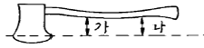
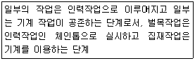
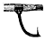
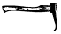
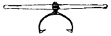
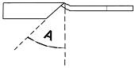

산림기능사 (2008-02-03 기출문제)
1과목: 조림 및 육림기술
1. 맹아갱신으로 천연갱신을 하는데 적합한 수종으로만 묶인 것은?
- 소나무, 잣나무
- 포플러류, 낙엽송
- 상수리나무, 아까시나무
- 오동나무, 잎갈나무
(정답률: 73%)

2. 잡목솎아내기 작업의 가장 적합한 시기는?
- 봄~초여름
- 여름~초가을
- 가을~초겨울
- 겨울~초봄
(정답률: 66%)
3. 천연림 보육 작업의 목적으로 보기 어려운 것은?
- 임지 환경에 맞는 건강한 산림을 유지시킬 수 있다.
- 쓸모없게 될 가능성이 있는 숲을 경제림으로 만들 수 있다.
- 표고자목, 해태목 등 소경재 생산을 주목적으로 한다.
- 적은 투자로 용재림을 조성할 수 있다.
(정답률: 67%)
4. 임지가 넓을 때 보통 3개의 벌채 열구를 편성하고 이것을 세 번의 처리로 벌채 갱신하는 작업종은?
- 군상 개벌 작업
- 연속 대상 개벌 작업
- 중림 작업
- 보잔목 작업
(정답률: 73%)
5. 종자 발아에 가장 중요한 3요소는?
- 수분, 광선, 온도
- 수분, 온도, 산소
- 양분, 온도, 산소
- 광선, 양분, 온도
(정답률: 80%)
6. 묘목의 가식 작업에 관한 설명으로 틀린 것은?
- 묘목의 끝이 가을에는 남쪽으로 기울도록 묻는다.
- 묘목의 끝이 봄에는 북쪽으로 기울도록 묻는다.
- 장기간 가식할 때에는 다발째로 묻는다.
- 조밀하게 가식하거나 오랜 기간 가식하지 않는다.
(정답률: 87%)
7. 용기묘(pot seeding)에 대한 설명으로 틀린 것은?
- 제초작업이 생략 될 수 있다.
- 묘포의 적지조건, 식재 시기 등이 문제가 되지 않는다.
- 묘목의 생산비용이 많이 들고 관수 시설이 필요 하다.
- 운반이 용이하여 운반비용이 매우 적게 든다.
(정답률: 77%)
8. 임업상 지력을 유지 증진하기 위하여 필요한 주요 사항에 해당하지 않는 것은?
- 적당한 비음(庇陰)을 유지한다.
- 개벌을 한다.
- 낙엽, 낙지를 보호한다.
- 토양 산도를 교정한다.
(정답률: 78%)
9. 중림 작업에 대한 설명으로 옳은 것은?
- 작업의 형태는 개벌작업과 비슷하다.
- 주로 하목은 연료생산에 목적을 두고 상목은 용재에 목적을 둔다.
- 상목은 맹아가 왕성하게 발생해야 하는 음성의 나무를 택한다.
- 연료림 조성에 가장 적당한 방법이다.
(정답률: 69%)
10. 파종상을 만들고 모판에 롤러로 흙의 입자와 입자가 밀착되도록 다짐 작업을 함으로써 얻을 수 있는 장점은?
- 해충의 발생을 억제한다.
- 새의 피해를 줄인다.
- 땅속의 수분을 효과적으로 이용한다.
- 병해의 발생을 줄인다.
(정답률: 83%)
11. 생태학적으로 자연 상태가 완전히 회복되어 안정된 숲이며, 풍치림으로 중요한 가치를 지니고 있는 숲은?
- 단순림
- 동령림
- 단층림
- 극상천연림
(정답률: 77%)
12. 다음 수종 중 꽃핀 이듬해 가을에 종자가 성숙하는 것은?
- 버드나무
- 떡느릅나무
- 졸참나무
- 상수리나무
(정답률: 59%)
13. 다음 중 임목 종자의 발아촉진 방법에 해당하지 않는 것은?
- 침수처리법
- 옥신처리법
- 항산처리법
- 노천매장법
(정답률: 51%)
14. 개벌작업의 변법으로 어미나무를 남겨 종자공급에 이용하고 갱신이 완료된 후 벌채 이용하는 작업은?
- 간단 작업
- 택벌 작업
- 보속 작업
- 모수 작업
(정답률: 77%)
15. 바다에서 불어오는 바람은 염분이 있어 식물에 해를 준다. 이러한 해풍을 막기 위해 조성하는 숲을 무엇이라 하는가?
- 방풍림
- 풍치림
- 방조림
- 보안림
(정답률: 57%)
16. 조림목이 양수인 경우 조림지의 밑깍기 방법으로 가장 적합한 작업은?
- 둘레깍기
- 전면깍기
- 줄깍기
- 혼합깍기
(정답률: 75%)
17. 묘목의 굴취와 선묘에 대한 설명으로 틀린 것은?
- 굴취 시 뿌리에 상처를 주지 않도록 주의한다.
- 포지에 어느 정도 습기가 있을 때 굴취 작업을 한다.
- 굴취는 잎의 이슬이 마르지 않은 새벽에 실시한다.
- 굴취된 묘목의 건조를 막기 위해 선묘 시까지 일시 가식한다.
(정답률: 79%)
18. 폭목(暴木)에 관한 설명으로 가장 옳은 것은?
- 폭목은 대개 다른 나무의 생장에 방해가 되는 가압목(可壓木)이다.
- 폭목은 수관폭이 좁은 활엽수에 해당된다.
- 폭목은 인접목과 생육공간에 관계없이 완전히 제거한다.
- 폭목이 군상으로 있으면 모두 제거한다.
(정답률: 74%)
19. 다음 중 무육작업과 관계있는 작업으로, 나머지 셋과는 구별되는 것은?
- 개벌 작업
- 산벌 작업
- 택벌 작업
- 제벌 작업
(정답률: 69%)
20. 임지에 비료목을 식재하여 지력을 향상시킬 수 있는데 다음 중 비료목으로 적당한 수종은?
- 오리나무류
- 전나무류
- 소나무류
- 사시나무류
(정답률: 82%)
21. 택벌림이 갖는 임분 구조는?
- 동령림형
- 일제림형
- 이령림형
- 단순림형
(정답률: 50%)
22. 대목의 수피에 T자형으로 칼자국을 내고 그 안에 접아를 넣어 접목하는 방법은?
- 절접
- 눈접
- 설접
- 할접
(정답률: 75%)
23. 나무와 나무 사이의 거리가 1m, 열과 열 사이의 거리가 2.5m의 장방형 식재일 때 1ha에 심게 되는 묘목 본 수는?
- 1000본
- 2000본
- 3000본
- 4000본
(정답률: 69%)
24. 묘목 식재 시 유의 사항으로 적합하지 않은 것은?
- 구덩이 속에 지피물, 낙엽 등이 유입되지 않도록 한다.
- 뿌리나 수간 등이 굽지 않도록 한다.
- 비탈진 곳에서의 표토 부위는 경사지게 한다.
- 너무 깊거나 옅게 식재 되지 않도록 한다.
(정답률: 85%)
25. 종자의 정선에서 풍선법을 적용하기 곤란한 수종 은?
- 소나무
- 낙엽송
- 가문비나무
- 밤나무
(정답률: 78%)
2과목: 산림보호
26. 동. 식물 및 미생물에 의한 수목 및 산림피해에 대한 설명으로 틀린 것은?
- 유용미생물이 사멸될 수 있으므로 묘포의 퇴비는 충분히 발효되지 않은 것을 사용한다.
- 임업에서는 대형동물보다는 소형동물에 의한 피해가 더 크다.
- 조류의 산림에 대한 관계는 복잡하지만 대개 유익한 관계인 경우가 더 많다.
- 풀베기는 여름 삼복(三伏)중에 하는 것이 효과적이다.
(정답률: 73%)
27. 유충은 잎살만 먹고 잎맥을 남겨 잎이 그물모양이 되며, 성충은 주맥만 남기고 잎을 갉아먹는 해충은?
- 삼나무독나방
- 버들재주나방
- 오리나무잎벌레
- 미류재주나방
(정답률: 78%)
28. 잣나무 털녹병(毛銹炳)의 병징 및 표징은 줄기에 나타난다. 병원균의 침입 부위는 어디인가?
- 잎
- 줄기
- 종자
- 뿌리
(정답률: 68%)
29. 조림지의 각종 초본식물의 하예작업을 철저히 함으로써 가장 방제 효과가 큰 해충은?
- 소나무좀
- 박쥐나방
- 오리나무좀
- 버들바구미
(정답률: 49%)
30. 다음 중 솔잎혹파리의 우화 최성기로 가장 적합한 것은?
- 4월 상순경
- 6월 상순경
- 9월 하순경
- 10월 상순경
(정답률: 57%)
31. 최근에 산불이 발생하면 임내에 가연물이 많아 대형화되는 경우가 많다. 1990년대부터 2003년 까지 조사된 산불원인 중 산불발생 빈도가 가장 높은 것은?
- 어린이 불장난
- 성묘객의 실화
- 입산자의 실화
- 논. 밭두렁 소각
(정답률: 74%)
32. 알에서 부화한 곤충이 유충과 번데기를 거쳐 성충으로 발달하는 과정에서 겪는 형태적 변화를 뜻하는 용어는?
- 우화
- 변태
- 휴면
- 생식
(정답률: 81%)
33. 수목의 그을음병과 관계있는 대표적인 해충은?
- 깍지벌레
- 무당벌레
- 담배장님노린재
- 마름무늬매미충
(정답률: 47%)
34. 곤충의 몸 밖으로 방출되어 같은 종끼리 통신을 하는데 이용되는 물질은?
- 호르몬(hormone)
- 페로몬(phermone)
- 테르펜(terpenes)
- 퀴논(quinone)
(정답률: 87%)
35. 향나무 녹병의 방제법으로 틀린 것은?
- 보르드액을 살포한다.
- 중간기주를 제거한다.
- 향나무의 감염된 수피를 제거. 소각한다.
- 주변에 배나무를 식재하여 보호한다.
(정답률: 80%)
36. 다음 중 담자균류에 의한 수병은?
- 소나무 혹병
- 밤나무 줄기마름병
- 그을음병
- 오동나무 탄저병
(정답률: 56%)
37. 다음 산림사업과 병의 발생에 대한 설명 중 틀린 것은?
- 천연림은 성립과정에서 여러 가지 도태압을 겪어 왔으므로 특정 병해에 대한 저항성이 강하다.
- 복층림(複層林)의 하층목은 상층목보다 내음성 (耐陰性) 수종을 선택하여야 한다.
- 천연림 내에서는 급격한 환경변화가 적다.
- 혼효림(混淆林)은 구성 수종이 다양하여 대면적 산림피해가 발생하기 쉽다.
(정답률: 77%)
38. 저온에 의한 나무의 피해는 지형과 방위에 따라 차이가 많이 난다. 다음 지형 중 피해가 가장 많은 지형은 어느 곳인가?
- 습기가 많은 낮은 지역이나 분지.
- 바람이 잘 통하는 평탄한 곳
- 북풍을 막아주는 남향의 지형
- 계곡이 아닌 햇볕이 잘 드는 곳
(정답률: 81%)
39. 곤충의 몸에 대한 설명으로 틀린 것은?
- 곤충의 체벽(體壁)은 표피, 진피층, 기저막으로 구성되어 있다.
- 부속지(附屬肢)들이 마디로 되어 있고 몸 전체도 여러 마디로 이루어진다.
- 대부분의 곤충은 배에 각 1쌍씩 모두 6개의 다리를 가진다.
- 기문(氣門)은 몸의 양옆에 최대 10쌍이 있다.
(정답률: 66%)
40. 다음 중 훈증처리 방법에 대한 설명으로 틀린 것은?
- 토양 속에 약제를 주입하는 방법도 있다.
- 임분 내 활용이 매우 용이하다.
- 밀폐할 수 있는 곳에 주로 적용한다.
- 휘발성이 강한 약제를 사용한다.
(정답률: 39%)
3과목: 임업기계일반
41. 도끼 자루가 알맞게 끼어 있는지 점검하고자 한다. 아래 그림에서 “가”와 “나”에 대한 조건으로 가장 올바른 것은?

- “가”의 길이가 “나”보다 길어야 한다.
- “가”의 길이가 “나”보다 짧아야 한다.
- “가”와 “나”의 길이가 같아야 한다.
- “가”와 “나”의 길이는 2배 이상 차이가 있어야 한다.
(정답률: 77%)
42. 다음 설명에 해당하는 작업 단계는?

- 인력 작업 단계
- 자동화 작업 단계
- 부분기계화 작업 단계
- 완전기계화 작업 단계
(정답률: 86%)
43. 예불기는 누계사용시간이 얼마일 때 마다 그리스 (윤활유)를 교환해야 하는가?
- 200시간
- 50시간
- 20시간
- 1시간
(정답률: 69%)
44. 다음 중 임업분야의 2 행정기관용으로 가장 적합한 연료는?
- 휘발유
- 경유
- 석유
- 벙커씨유
(정답률: 79%)
45. 다음 윤활유의 외부기온에 따른 점액도의 선택기준 으로 틀린 것은?
- 외기온도 ＋10°C ~ ＋40°C = SAE 30
- 외기온도 ＋10°C ~ -10°C = SAE 20
- 외기온도 -10°C ~ -30°C = SAE 20W
- 외기온도 -30°C ~ ＋40°C = SAE 30
(정답률: 61%)
46. 강선 집재 작업 시 강선을 따라 이동하는 집재목의 운동속도가 지나치게 빠를 경우 목재의 파손과 안전작업의 위험도가 높아진다. 운동 속도를 줄이기 위한 방법으로 가장 적합한 것은?
- 집재목의 크기를 줄인다.
- 집재목의 무게를 늘려준다.
- 강선에 오일 칠을 하여 준다.
- 강선의 장력을 낮춰 준다.
(정답률: 72%)
47. 벌도된 나무를 체인톱으로 가지치기 할 때에 가장 적합한 작업 방법은?
- 안내판이 짧은 중 기계톱을 사용한다.
- 벌도된 나무에 체인톱을 가능한 얹어놓고 작업 한다.
- 작업자는 벌도된 나무로부터 가급적 먼 간격을 두고 작업한다.
- 체인톱을 벌도목 위에 밀착시키지 않고 작업 한다.
(정답률: 40%)
48. 산림 작업용 도끼의 날을 갈 때 날카로운 삼각형으로 연마하지 않고 그림과 같이 아치형으로 연마 하는 이유로 가장 적합한 것은?
- 도끼날이 목재에 끼이는 것을 막기 위하여
- 연마하기가 쉽기 때문에
- 도끼날의 마모를 줄이기 위하여
- 마찰을 줄이기 위하여
(정답률: 80%)
49. 체인톱의 엔진에 과열현상이 일어났을 경우 예상되는 원인으로 가장 거리가 먼 것은?
- 클러치가 손상되어 있다.
- 기화기 조절이 잘못되어 있다.
- 연료 내에 오일 혼합량이 적다.
- 점화코일과 단류장치에 결함이 있다.
(정답률: 37%)
50. 예불기의 톱 회전 방향은?
- 시계방향
- 시계 반대 방향
- 일정하지 않은 방향
- 작업자 중심방향
(정답률: 87%)
51. 예불기의 장치 중 불량하면 엔진의 힘이 줄고 연료 소모량을 많아지게 하는 것은?
- 엑셀레바
- 공기여과장지
- 공기필터 덮개
- 연료탱크
(정답률: 71%)
52. 다음 중 용도가 같은 도구만으로 바르게 구성된 것은?
- 스위스 보육낫, 손도끼
- 재래식낫, 가지치기톱
- 고지절단용 가지치기톱, 소형손톱
- 손도끼, 무육용 이리톱
(정답률: 70%)
53. 다음 모양 중 집재 작업 도구가 아닌 것은?



(정답률: 41%)
54. 아래 그림은 체인톱 체인의 날부위(대패형톱날)을 위에서 내려다 본 그림이다. 그림의 각도를 창날각이라고 할 때 이 각도(A)는 얼마 크기로 갈아주어야 적합한가?

- 20°
- 35°
- 40°
- 65°
(정답률: 80%)
55. 다음 중 기계톱 부품인 스파이크의 기능으로 적합한 것은?
- 동력 차단
- 체인 절단 시 체인 잡기
- 정확한 작업위치 선정
- 동력 전달
(정답률: 66%)
56. 다음 중 4행정기관에서 1싸이클을 완료하기 위하여 크랭크축은 몇 도(°) 회전해야 하는가?
- 720°
- 360°
- 120°
- 180°
(정답률: 76%)
57. 식재작업 시 유의할 사항으로 틀린 것은?
- 식재괭이 자루가 안전한가 확인한다.
- 경사지에서는 상하로 서서 작업한다.
- 작업자 간의 안전거리를 유지한다.
- 안전장비를 착용한다.
(정답률: 84%)
58. 다음 예불기 날의 종류별 용도가 틀린 것은?
- 나일론줄 - 잔디 및 1년생 초본류
- 삼각날 - 사용범위 직경 2㎝까지의 관목류 제거용
- 지름 200㎜원형톱날 - 사용범위 직경 10㎝까지의 풀베기 및 지존 작업용
- 지름 200㎜ 기계톱날형 원형톱날 - 시용범위 직경 2㎝까지의 관목류 제거용
(정답률: 44%)
59. 휘발유나 석유를 기화시킨 후 여기에 공기를 혼합 하여 실린더 내에 흡입, 압축 그리고 점화 시키는 기관은?
- 압축착화기관
- 전기점화기관
- 디젤기관
- 소구기관
(정답률: 41%)
60. 다음 중 삼각톱날의 연마 준비물이 아닌 것은?
- 마름모줄
- 원형 연마석
- 톱니 젖힘쇠
- 원형줄
(정답률: 67%)